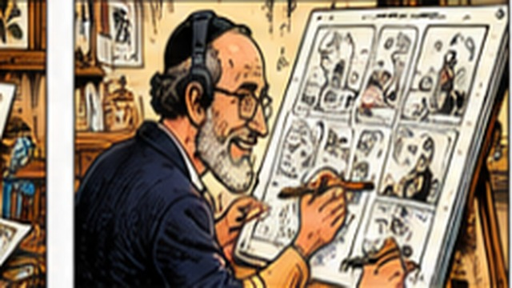
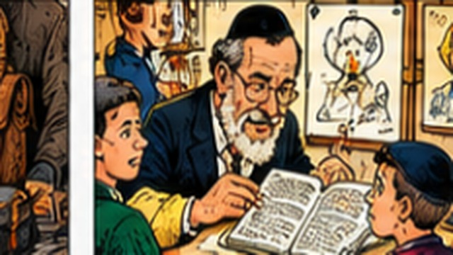
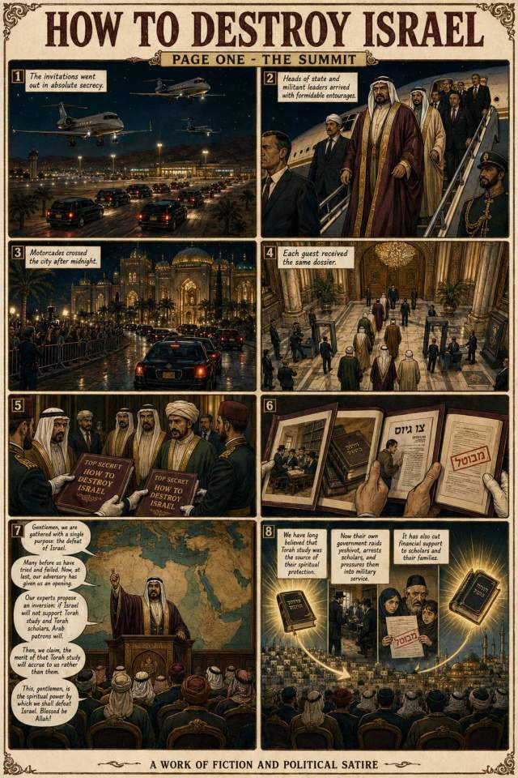

01 · Comics & graphic novels
Characters, ideas
and visual stories.
Sequential storytelling ranging from short-form comics to longer illustrated concepts.
Explore comics →
Writer · Illustrator · Creative Director
Comics, satire, educational storytelling, memoir and illustrated history—collected in one place for readers, publishers, educators and creative collaborators.
Explore the collections ↓01 · Comics & graphic novels
Sequential storytelling ranging from short-form comics to longer illustrated concepts.
Explore comics →
02 · Educational storytelling
Illustration and narrative developed to help audiences understand, remember and discuss.
Explore educational work →
03 · Advocacy, Holocaust & history
Personal testimony, Holocaust memory, media literacy and advocacy through visual narrative.
Explore advocacy & Holocaust work →Explore biography & legacy →
04 · Humor & satire
Social observation, absurdity and sharply drawn characters.
Explore humor & satire →
Complete archive
The existing full project carousel remains intact, including individual project pages and original PDFs.
Browse all projects →